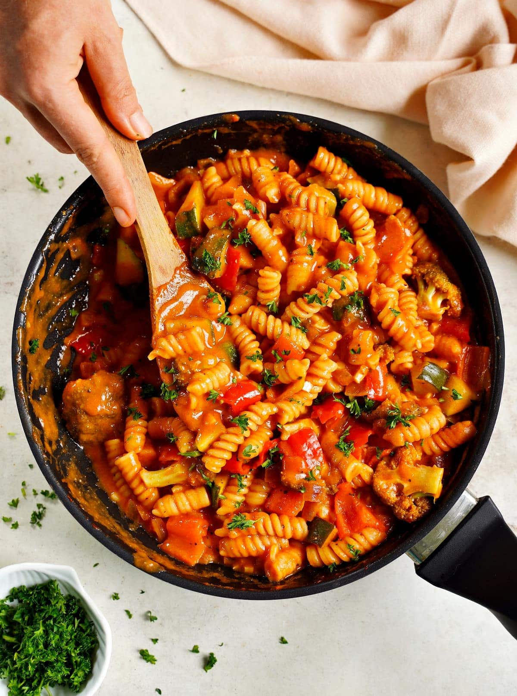

Pasta
Home

Description
This is the kind of dish that makes weeknights feel effortless. One pot, less than twenty minutes,
and dinner is on the table which is exactly why it has become one of Penelope’s most requested meals.
The secret, as always, is starting with a beautiful sauce. Toss your pasta directly into the sauce, let
it drink up all of that flavor as it cooks, and finish with a generous handful of Parmigiano-Reggiano and a drizzle
of extra-virgin olive oil. That’s it. That’s dinner. Buonissimo.
Ingredients
- 3 tablespoons extra-virgin olive oil plus more for drizzling
- 3 cloves garlic peeled
- 6 fresh basil leaves torn by hand
- 1 (24 ounce) jar The Pasta Queen Marinara Sauce
- Sea salt to taste
- 1 pound ditalini
- Finely grated Parmigiano-Reggiano to finish
Steps
- Add the olive oil to a Dutch oven and add garlic. Cook over medium heat until small bubbles start to form around the garlic, about 2 minutes. Add the fresh basil, and cook for about 1 minute, or until very fragrant.
- Add the marinara sauce, then fill the jar halfway with water, shake it to get every last drop out, and add that water to the pot. Add a generous pinch of salt and bring to a boil.
- Once boiling, remove and discard garlic cloves, then add pasta and reduce heat to a simmer. Cook, stirring often, and adding a splash of simmering water as needed until the pasta is al dente, about 10 to 12 minutes.
- Serve topped with Parmigiano-Reggiano and a drizzle of extra-virgin olive oil.